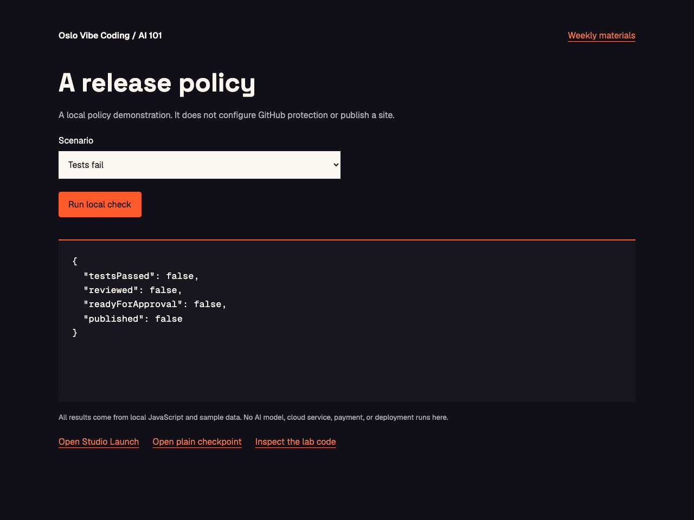

AI for All. AI for Good.
Course 01 / Session 05 of 05
Launch with a way back
A reviewed release and a recovery you have tried.
Build and publish your first website with AI
AI for All. AI for Good.
A reviewed release and a recovery you have tried.
Build and publish your first website with AI
Try the included local concept lab, then build the exercise on your own project. A release checklist, release notes and a rollback rehearsal.
Open the exampleLocal JavaScript and sample data. No model calls or live service changes.

Your site, search, knowledge folder and GitHub checks.
Review a Vercel preview, publish only with approval, and verify the URL from another device. Rehearse a visible mistake and manual rollback on a disposable preview.
Site-only search remains usable; recovery is verified against the original symptom.
Continue with: Your site, search, knowledge folder and GitHub checks.
Read the relevant project files before changing code. Review a Vercel preview, publish only with approval, and verify the URL from another device. Rehearse a visible mistake and manual rollback on a disposable preview. Keep existing features working and secrets server-side. Show the plan and affected files before implementation. Do not publish, enable spending or change accounts without approval.
A local policy demonstration. It does not configure GitHub protection or publish a site.
A preview is a version to inspect. Publishing makes a version live; rollback restores a known-good version.
Inspect the preview
Approve the release
Verify or restore
Remove AI configuration in the preview and rehearse a failed release.
Site-only search remains usable; recovery is verified against the original symptom.
Test this case: Remove AI configuration in the preview and rehearse a failed release. Expected: Site-only search remains usable; recovery is verified against the original symptom. Make the smallest necessary change. Keep the original checks. Rerun the relevant tests and inspect the result. Report actual evidence, failures and what is still untested.
Review a Vercel preview, publish only with approval, and verify the URL from another device. Rehearse a visible mistake and manual rollback on a disposable preview.
A release checklist, release notes and a rollback rehearsal.
A release checklist, release notes and a rollback rehearsal.
Let someone else try it.
Show the request that helped.
Show how you checked it.
AI for All. AI for Good.
Next: Brief an agent on your site
oslovibecoding.tech